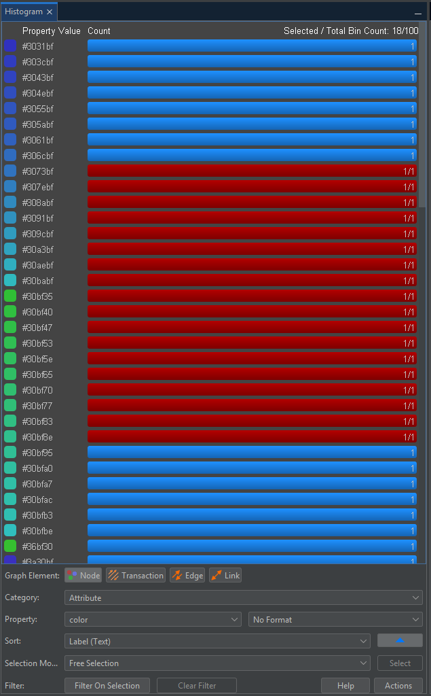
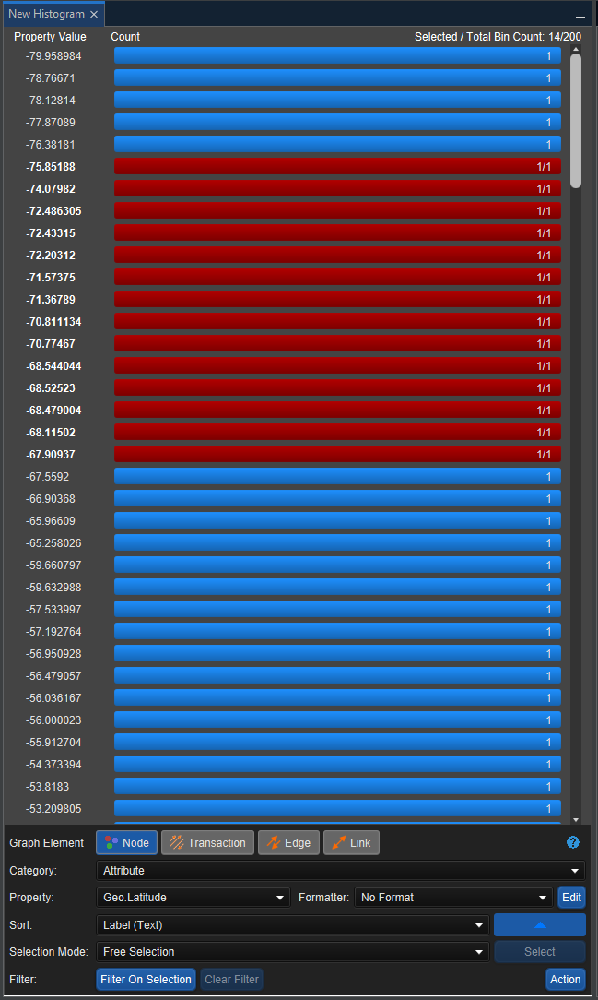
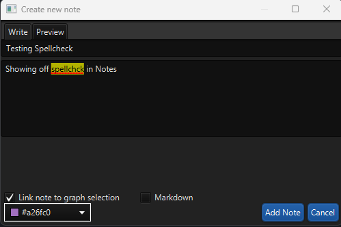

What's new in Constellation v3.3
The focus of this release has been to improve the overall user experience of Constellation. Numerous bugs have been fixed that should make Constellation more stable and performant.
Here is a list of changes we’ve added to this version of Constellation.
Histogram View Rewrite
The Histogram View has been rewritten! The new version of the Histogram is currently available from the Experimental -> Views -> New Histogram menu. Although this new version looks very similar to the original, the new version utilises the JavaFX framework that many of the other views use, which offers significant benefits including a better performance. The rewrite also includes a Light Mode which can be seen when the Constellation Look and Feel is set to FlatLaf Light.
|
 |
 |
Spellcheck in More Views
Spellcheck, which previously has only been available in select plugins in the Data Access View, has now been added into the Conversation and Notes Views, and in the File and Database Importers. In the Conversation View, spellcheck has been added to the Create Translation text boxes and in the Notes View, spellcheck has been added to the text boxes on the new note and edit note dialogs. In the File and Database Importers, spellcheck can be found in the new attribute textbox. Spellcheck has also been added to the Attribute Editor in the dialogs for String Attributes but it is turned off by default.

Welcome Page Refreshes Recent Graphs
Previously, when Constellation is opened, the Welcome Page cannot refresh the Recent graphs shown once it had been opened. A change has been made that allows the Welcome Page to refresh the graphs shown in the Recent graph section whenever the Welcome Page is in focus. This means that any new graphs that have recently been saved or existing graphs that have been renamed will still be accessible to open through the Welcome Page.
Star Files Cannot Be Manipulated Outside of Constellation
Star files used to be able to be moved, renamed or deleted while the graph was open in Constellation which would cause exceptions. Star files have now been updated to stop any file manipulation while they are in use, similar to many other file types.
Several Bug Fixes
Numerous bug fixes have also been made including:
- Fixed exceptions thrown when a map that is not the default is selected in the Map View
- Fixed ability to rename a graph from within Constellation
- Adjusted text sizing in places where text was being cut off
- Fixed issues with file-based transport in the Rest API
- Resolved exception thrown when attempting to edit a Node or Transaction Type attribute in the Attribute Editor
Want to know more?
You can find out more information about the latest updates on the What's new page once you have installed version 3.3. There's loads of extra details available in the Release Notes and Change Log.
Would you like to learn more about how Constellation works?
There is a training package available on GitHub to learn how to make the most use of the various features in Constellation. There is also developer training for those seeking to deep dive into the underlying source code.
Contact Us
Do you have any feedback or suggestions for improvement? Noticed a bug? You can log an issue via the Help menu or clicking here.